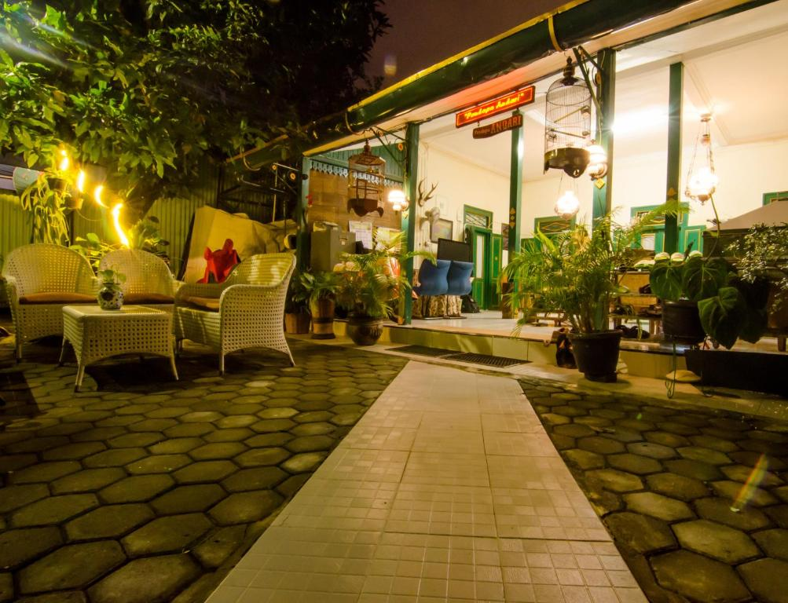

Bukan Sekadar Penginapan,
Ini Rumah Anda

The Living Sanctuary — Est. 2024

In the heart of Yogyakarta, we prioritize quality over volume. Seven rooms, infinite warmth.
The Living Sanctuary — Est. 2024
— Pak Dodi & Ibu Andari

Kamar terluas kami dengan pemandangan langsung ke taman dalam. Menampilkan furnitur jati antik dan area duduk pribadi.
Rp 150.000 / malam

Keseimbangan sempurna antara kenyamanan modern dan nuansa tradisional. Ideal untuk pasangan yang mencari suasana romantis.
Rp 150.000 / malam

Pilihan cerdas dengan fasilitas lengkap. Nyaman, efisien, dan tetap mempertahankan karakter hangat Pendopo Andari.
Rp 150.000 / malam
Enhancing your stay with authentic Javanese hospitality.
Sarapan rumahan khas Yogyakarta yang dimasak segar setiap pagi oleh Ibu Andari sendiri.
Layanan cuci pakaian gratis untuk tamu, memastikan Anda bepergian lebih ringan dan nyaman.
Dapur terbuka 24 jam dengan teh, kopi, dan camilan lokal yang bebas Anda nikmati kapan saja.
Ruang komunal berarsitektur Jawa untuk bersantai, membaca, atau berbincang di sore hari.
"Kebersihannya sangat terjaga, dan fasilitas gratis laundry sangat membantu kami yang sedang road trip. Area Pendopo sangat nyaman untuk minum teh sore. Pasti akan kembali lagi."
— Keluarga Pratama, Surabaya